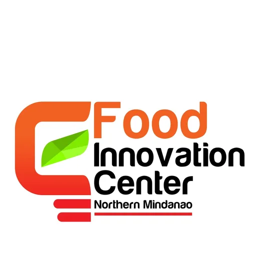

Northern Mindanao FIC (NMFIC) — USTP
University of Science and Technology of Southern Philippines (USTP) · Region X
The Northern Mindanao Food Innovation Center (NMFIC) is a DOST-funded Food Innovation Center hosted by the University of Science and Technology of Southern Philippines (USTP) in Cagayan de Oro City. As the FIC serving Region X, NMFIC provides food entrepreneurs and MSMEs across Northern Mindanao with state-of-the-art food processing equipment, technical assistance, and product development services.
- Category
- Food Innovation Center
- Host institution
- University of Science and Technology of Southern Philippines (USTP)
- City
- Cagayan de Oro
- Region
- Region X
- Operating status
- Operating
About the Center
NMFIC plays a critical role in the Northern Mindanao agri-food value chain, supporting local producers in upgrading their products to meet food safety, regulatory, and market standards. It is also the partner host for the Startupreneurship program in Cagayan de Oro, connecting student entrepreneurs with USTP's innovation ecosystem.
Programs & Services
- Product Development — R&D assistance for new food products from formulation to prototype
- Food Safety & Regulatory Assistance — Support for FDA registration, HACCP compliance, and food safety certifications
- Packaging & Nutrition Labeling — Label design review, nutritional analysis, and packaging solutions
- Product Costing — Cost analysis and pricing strategy for food entrepreneurs
- Equipment Rental — Access to spray dryer, freeze dryer, water retort, vacuum fryer, and other specialized equipment
- MSME Training — Seminars and workshops on food processing, quality control, and entrepreneurship
- Marketing Strategy — Guidance on market positioning, branding, and distribution channels
- Product Testing — Microbiological, physicochemical, and sensory testing services
Contact
Sources & references
Details are drawn from public records and the sources above, July 2026.
Startupreneur Innovation Hub · synced from the Notion catalog (July 2026) · status: published.